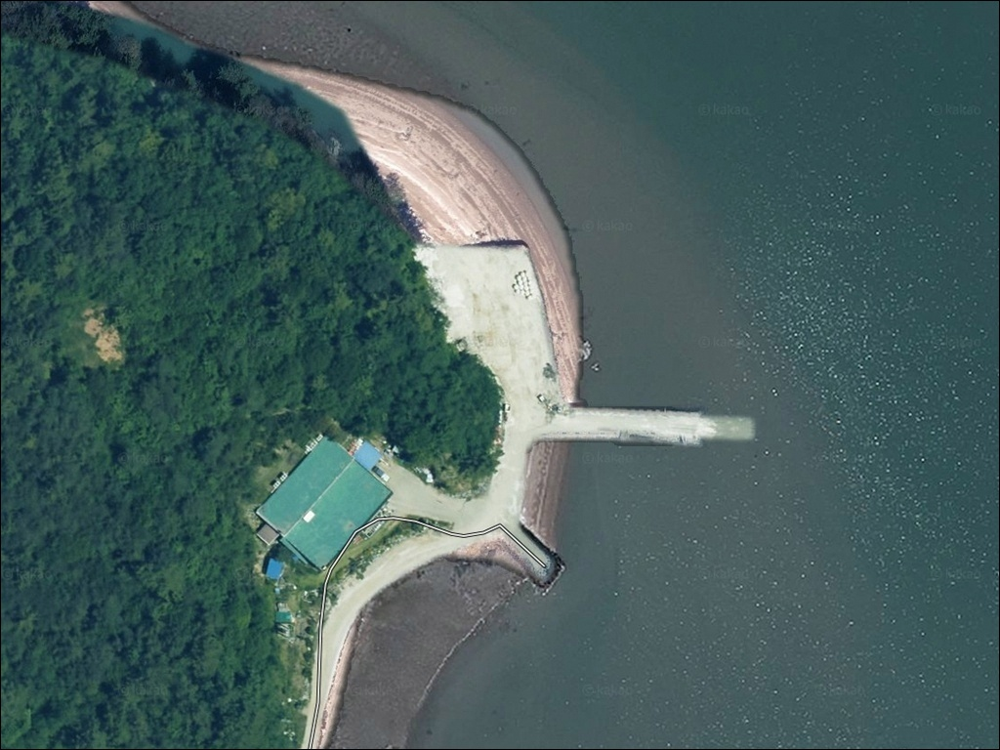
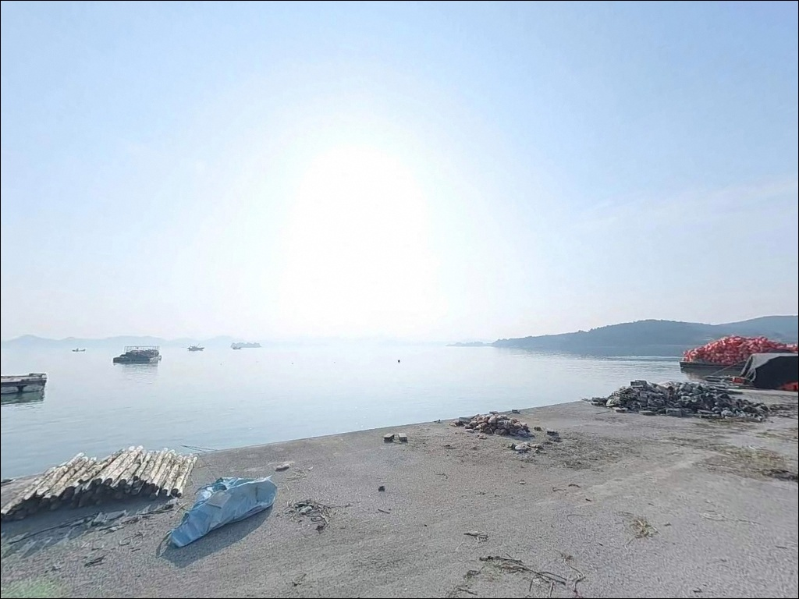
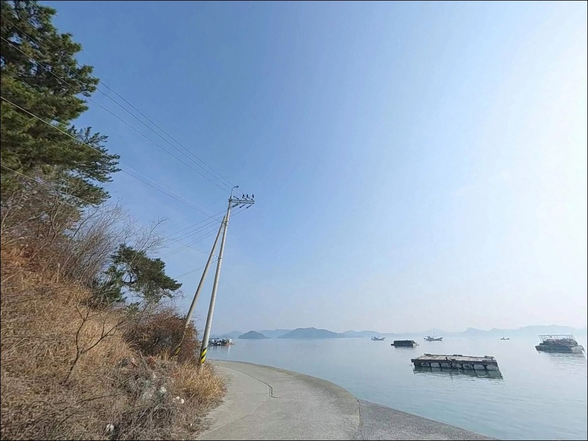
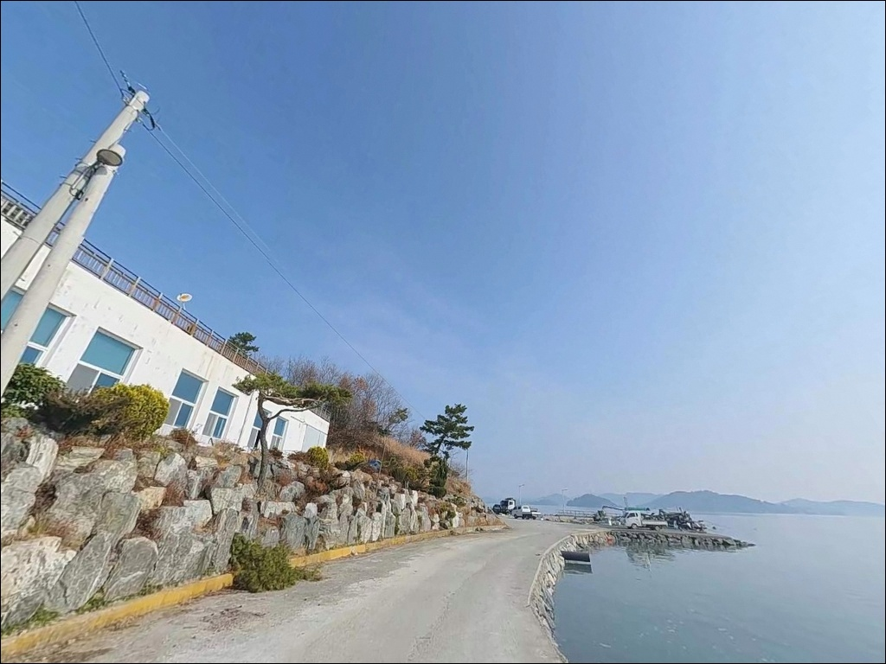
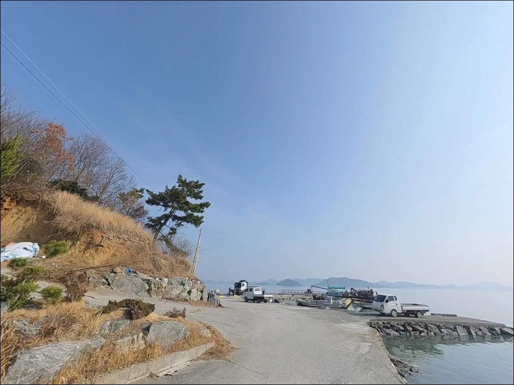
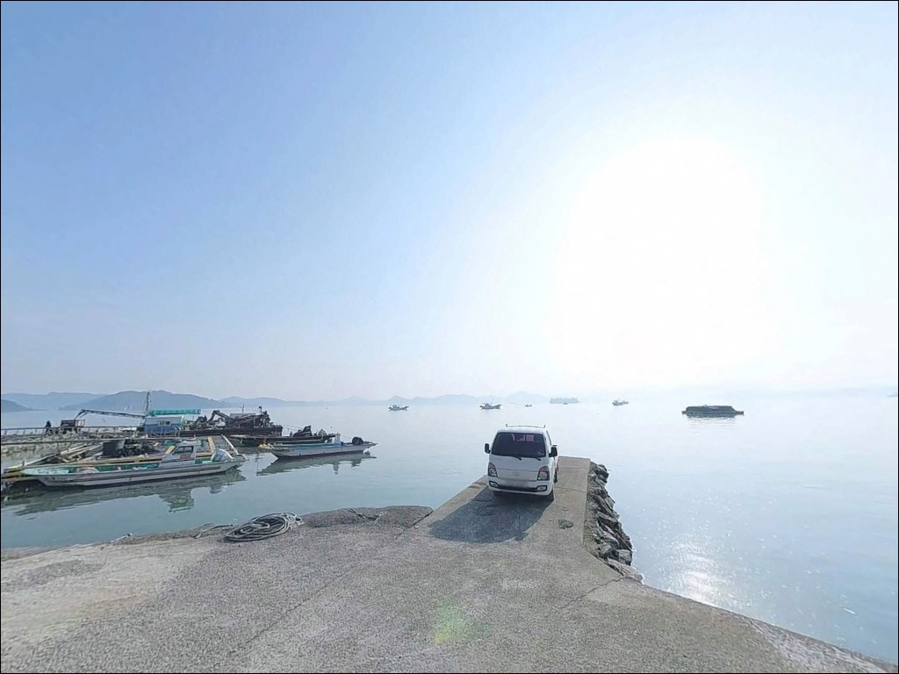
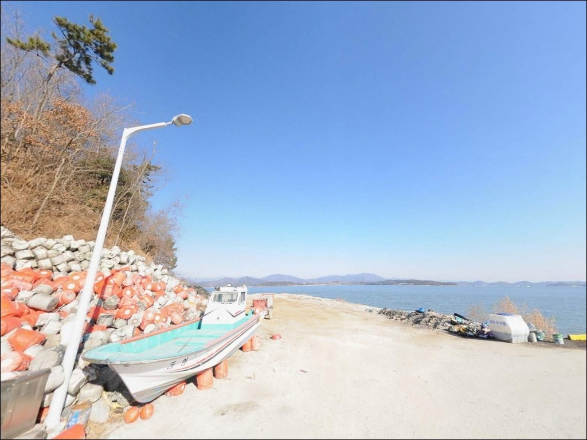
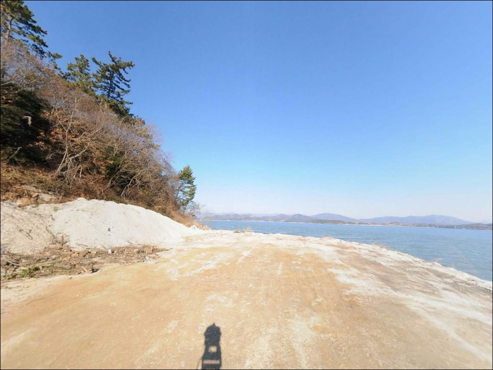
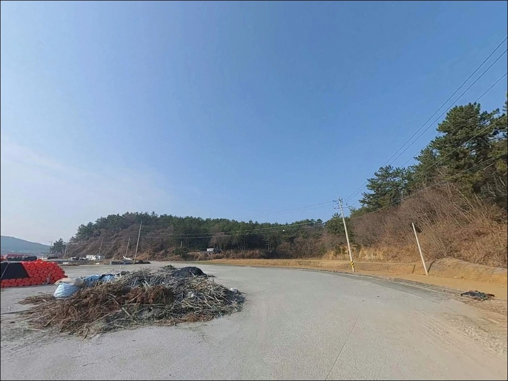

이 페이지에는 광고(제휴 링크 포함)가 있으며, 광고 링크를 통해 구매하면 운영자가 판매 수익 또는 수수료를 받을 수 있습니다. 포인트 사진: 카카오맵 스카이뷰·로드뷰. 이 페이지의 지도·사진 이미지는 카카오맵의 실제 서비스 이미지와 다를 수 있습니다.


고흥 대전리방파제 간조 피하고 들물 맞춰야 낚시가 되는 지형 조건
포인트 안내
대전리방파제
전남 고흥군 두원면 대전리 1-3
득량만 내만은 조수 간만의 차가 크게 작용하는 해역입니다.
간조 시점에 진입하면 방파제 외항 수심이
낚시 운용이 어려운 수준까지 낮아져
채비를 던져봤자 바닥만 긁는 상황이 됩니다.
물때 한 번 어긋나면
현장에서 두세 시간을 허비하게 되는 구조입니다.
대전리방파제는 전남 고흥군 두원면 대전리,
득량만 서쪽 해안선에 자리한
마을 어항 기능을 겸하는 소형 방파제입니다.
대전해수욕장 북단에 붙어 있어
낚시와 차박을 동시에 운용하기
좋은 구조적 조건을 갖추고 있습니다.
이 글은 대전리방파제의
진입 환경, 낚시 여건, 차박 조건에 집중합니다.
조황 단정이나 특정 어종 보장은
이 글의 범위에 포함되지 않습니다.

1. 진입 동선과 포인트 접근성
고흥읍 기준 서북쪽으로 약 13km 거리에 위치합니다.
두원면 소재지를 거쳐 대전리 방면 해안 도로를
따라 진입하며, 대전해수욕장 방면 구간까지는
왕복 2차선 포장도로가 연결되어 있습니다.
대형 캠핑카와 카라반도 무리 없이
방파제 입구까지 접근할 수 있는 수준입니다.
방파제 직전 마을 진입 구간에서는
도로 폭이 다소 좁아지는 구간이 나타납니다.
처음 방문하는 경우 위성지도로
마을 진입 구간을 미리 확인해 두면
회차 지점을 파악하는 데 도움이 됩니다.
방파제 입구 광장에서는 회차가 자유롭습니다.
주차는 방파제 시작 지점의 넓은 공터와
대전해수욕장 공영주차장 두 곳을 활용합니다.
방파제 초입 일부 구간에서는
차량을 낚시 자리 바로 뒤에 세우는
'차 바로 옆 낚시' 형태도 가능합니다.

2. 차박 환경과 야간 체류 여건
대전해수욕장 소나무숲 안쪽은
야간에 어둡고 차량 통행이 적어
프라이버시 확보가 잘 되는 환경입니다.
주변 민가와 일정 거리가 유지되어 있어
소음 마찰도 적은 편입니다.
낚시 후 하룻밤 머무는 용도로는
나쁘지 않은 조건입니다.
방파제를 따라 가로등이 설치되어 있어
방파제 구간 야간 시야 확보는 가능합니다.
다만 방파제 끝단 쪽은 조명 영향이 적어
개인 헤드랜턴은 반드시 준비해야 합니다.
득량만 내만 구조라 파도 소음은 크지 않으나,
기상에 따라 바람 영향을 받는 경우가 있습니다.
해수욕장 공중화장실이 도보 약 200m 거리에
연중 개방되어 있는 점은
이 권역 소형 방파제 중 눈에 띄는 장점입니다.
차박 시 발전기 심야 가동과
심야 음악 재생은 마을 주민에 대한
배려 차원에서 자제하는 것이 기본입니다.


3. 주변 편의시설 및 인프라 현황
대전해수욕장 내 공중화장실과 개수대가
연중 이용 가능합니다.
방파제에서 도보 약 200m 거리로,
이 권역 낚시 포인트 중에서
편의시설 접근성이 좋은 편에 속합니다.
마을 내 소형 매점이 있으나
운영 시간과 재고는 제한적입니다.
식수, 얼음, 낚시 소품은 출발 전
두원면 소재지 방면 마트에서
미리 갖춰 가는 편이 현실적입니다.
두원면 소재지까지는 차량으로 약 5분 거리입니다.
응급 상황 발생 시 고흥읍 방면
고흥종합병원과 대형 마트(하나로마트)까지는
약 13km 거리입니다.
연료·비상약품·식수 준비를
출발 전에 챙기는 것이 기본입니다.

4. 진입 전 반드시 챙겨야 할 준비사항
대전리방파제 방문 전 가장 먼저 확인해야 할 것은
물때입니다.
득량만은 보성·장흥·고흥 세 군이 맞닿은
폐쇄형 내만 구조로, 조수 간만의 차가
크게 작용하는 해역입니다.
바다타임에서 두원면·대전리 기준 물때를 확인하고,
들물 중반에서 만조 전후를 노려
출발 시각을 맞추는 것이 기본 전략입니다.
모래·뻘 혼합 바닥인 이 포인트에서는
원투낚시 채비 운용이 안정적인 편이라
밑걸림 손실이 크지 않습니다.
여분 채비는 여유 있게 준비해 두는 것이 좋습니다.
마을 선착장 기능을 겸하는 방파제이므로
어선 정박 구역에서의 낚시는 삼가고,
어구와 그물을 훼손하지 않도록
자리를 잡는 것이 기본 매너입니다.
야간에는 헤드랜턴과 구명조끼를
반드시 착용해야 합니다.

5. 물때가 맞아야 낚시가 되는 이유
— 득량만 내만의 수심 구조
대전리방파제의 외항 끝단은
만조 기준 수심 6m 안팎으로 형성됩니다.
이 수심 구간이 찌낚시와 원투 모두
운용 가능한 조건이 갖춰진 자리입니다.
반면 간조 시에는 수위가 현저히 낮아져
외항 쪽도 채비 운용이 어려운 수준이 됩니다.
방파제 외항 전체에는 테트라포트가 거치되어 있고,
내항은 콘크리트 벽면과 석축 구조로
이루어져 있습니다.
바닥 지형은 모래와 뻘이 혼합된 평탄지이며,
해수욕장과 인접한 초입 구간은
사질대(모래)가 넓게 형성되어 있습니다.
밑걸림 빈도는 낮은 편이라
초보자도 채비 손실 부담 없이 운용할 수 있습니다.
방파제 우측으로는 대전해수욕장 백사장이
연결되고, 해수욕장 좌우에는
기암절벽과 암반 구간도 분포합니다.
내만형 구조 특성상 조류는 강하지 않으며,
포인트 집중도는 방파제 끝단에 몰리는
전형적인 내만 방파제 패턴입니다.
출조 전에 두원면 일대 최신 조황을
검색해 보시는 편이 좋습니다.


6. 포인트에 어울리는 낚시 스타일
이 포인트에서 가장 기본적인 낚시는
원투낚시입니다.
모래·뻘 혼합 바닥에서는 도다리, 보리멸,
붕장어 계열이 반응하는 구조이며,
방파제 입구에서 외항 방향 또는
해수욕장 방향으로 채비를 던지는 방식이
이 지형 조건에 잘 맞습니다.
내항 석축 연안과 외항 테트라포트 경계부를
에기나 루어로 탐색하는 방식도 유효합니다.
고흥 일대 내항형 방파제에서는
갑오징어와 낙지·문어를 노리는
루어 낚시 비중이 가을철에 높아집니다.
찌낚시는 외항 테트라포트 끝단에서
조류가 소통되는 구간을 중심으로 운용합니다.
감성돔과 숭어가 주요 탐색 대상이며,
야간에는 방파제 직벽 구간에서
볼락 라이트게임도 시도해볼 만합니다.
소형 지그헤드 채비로 직벽을 따라
천천히 탐색하는 방식이 어울립니다.

7. 대안 포인트와 플랜 B 동선
대전리방파제가 물때 조건이 맞지 않거나
자리 여건이 여의치 않을 때는
풍류포구가 첫 번째 대안입니다.
북쪽으로 약 4km 이동하면 닿을 수 있으며,
선착장과 방파제를 함께 갖춘 구조로
진입 여건도 안정적입니다.
고흥만방조제 수변공원 방면은
약 8~10km 이동이 필요하지만
대규모 주차장과 공원 시설이 완비된
차박 베이스캠프로 활용하기 좋습니다.
방조제 선착장 구간에서는
원투낚시와 루어낚시 모두 운용할 수 있으며,
조황 정보가 상대적으로 풍부한 곳입니다.
대전리방파제 낚시 여건이 기대에 못 미칠 경우,
같은 해수욕장 구간 백사장에서
원투낚시로 전환하는 방식도
현실적인 플랜 B입니다.
파도가 완만한 내만 백사장 특성상
채비 안정성이 유지되는 구조입니다.

물때 하나 맞추면
대전리방파제가 달라 보입니다
원투낚시나 에깅을 즐기는 낚시인이라면
대전리방파제의 조건은 잘 맞는 구조입니다.
약 160m 일자형 외항과 테트라포트 경계,
모래·뻘 혼합 바닥이 복수의 낚시 방식을
동시에 운용할 수 있는 여지를 만들어 줍니다.
정보가 많지 않은 조용한 포인트라는 점도
탐방형 낚시꾼에게는 오히려 매력입니다.
반면 물때 계산 없이 간조 시간에 진입하거나,
편의시설 없는 완전 자급 체제로 접근하면
불편한 상황을 맞닥뜨릴 수 있습니다.
물때 확인, 자급 준비, 진입로 점검
이 세 가지를 갖추고 가면
득량만 내만의 조용한 낚시를
충분히 즐길 수 있는 포인트입니다.
대전해수욕장 소나무숲에 자리를 깔고
하룻밤 머무는 차박 여행자라면,
화장실과 주차장이 갖춰진 환경에서
내만 방파제 낚시와 해변 산책을
함께 엮어볼 수 있는 곳입니다.